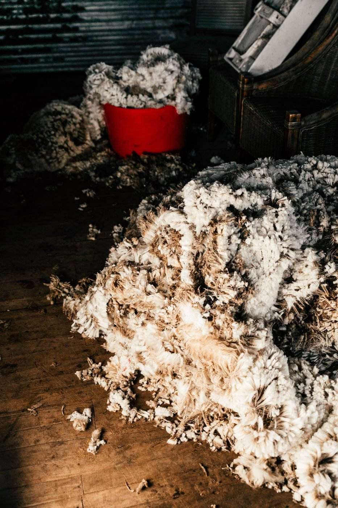
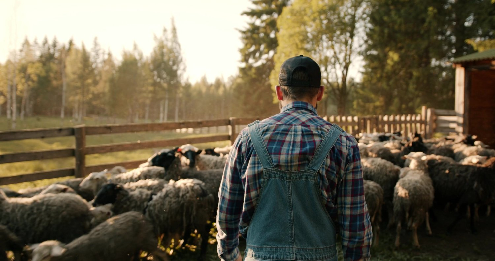
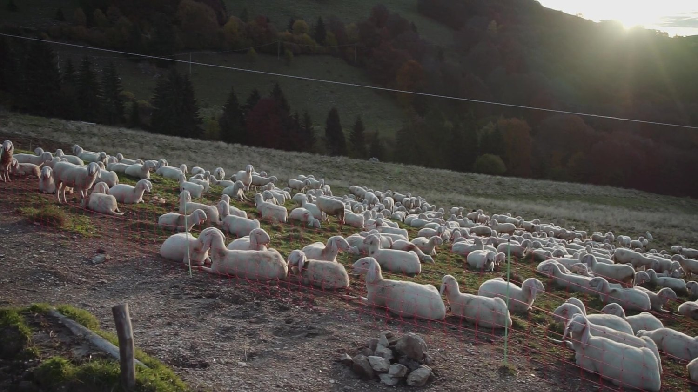

Esquilar a una oveja te cuesta entre 1,25 y 1,50 €. Esa oveja da unos 2,3 kilos de lana al año. Y si es de raza común, esos kilos los vendes a cinco céntimos el kilo: no llega a 12 céntimos por animal. Haz la cuenta. Cada esquileo es a pérdidas. De hecho, en 2026 ya hay ganaderos que han tenido que pagar para que les retiren la lana: vale menos que cero.
Así que muchos hacen lo único que parece sensato: amontonarla en una nave, regalarla o quemarla. Pero qué hacer con la lana de oveja tiene mejor respuesta que esa, y no pasa por resignarse al precio del vellón crudo.

La estampa de siempre: el vellón amontonado en la nave porque no compensa moverlo. Pero tiene salida.
En esta guía verás 5 salidas reales para la lana que hoy no aprovechas —textil con trazabilidad, usos agrícolas, aislamiento, fieltro y conectar directamente con quien la busca—, qué salida le pega a cada raza, y casos españoles que ya lo están haciendo. Es para ti si tienes ovejas y la lana se te acumula, y también si trabajas la lana y no sabes dónde encontrarla.
El mapa de la lana española
España es el mayor productor de lana de la Unión Europea. Esquilamos entre 20.000 y 23.000 toneladas al año (23.168 t en 2021 según el Ministerio de Agricultura; 20.670 t en 2024, con tendencia a la baja) de un rebaño de unos 14 millones de ovejas repartidos en 109.756 explotaciones (censo MAPA, enero 2025).
Y aquí está la paradoja: producimos muchísima lana y apenas la aprovechamos. En torno al 60% se exporta en bruto, buena parte rumbo a China, y —según nuestro propio Directorio de la Lana— apenas un 1,7% se transforma dentro de España. El eslabón que falta es industrial: quedan solo tres lavaderos de lana operativos (en Valladolid y Cuenca). El último gran lavadero tradicional, el de Béjar, cerró en 2021 tras 75 años. Sin lavado ni clasificación cerca, el vellón sucio vale casi nada.
El contraste duele cuando miras fuera: el merino australiano, clasificado por finura, se paga a casi 9 dólares el kilo. La misma fibra, sin medir ni separar, aquí se queda en céntimos. La conclusión no es que nuestra lana sea mala. Es que el valor está en transformarla, no en el vellón crudo.
Qué hacer con la lana de oveja: las 5 salidas reales
La regla mental: cuanto más transformas la lana, más vale. Una salida no excluye a la otra; depende de la calidad de tu vellón, de la raza y del tiempo que quieras dedicarle. Aquí van las cinco, de más a menos exigentes.
| Salida | Para qué lana | Esfuerzo | Dónde / con quién |
|---|---|---|---|
| 1. Textil trazable | Fina (merino, entrefino), limpia | Alto | Hilanderías, sello Lana 100% Autóctona |
| 2. Agrícola (acolchado/pellets) | Basta o sucia, sin lavar | Bajo | Tu propia finca, plantas de peletizado |
| 3. Aislamiento/construcción | Basta, en volumen | Medio | Fabricantes de aislante natural |
| 4. Fieltro y relleno | Corta, irregular | Bajo | Artesanas de fieltro, tapicería, ropa de cama |
| 5. Conecta Lana | Cualquiera | Bajo | oficioscirculares.com/conecta-lana |
1Textil con trazabilidad
El problema: la lana de calidad textil se malvende mezclada con la basta y sin certificar el origen.
El dato: existe el sello «Lana 100% Autóctona» del Ministerio de Agricultura, que certifica que la fibra procede de razas autóctonas de ganadería extensiva. Una prenda con historia y origen demostrable se paga muy por encima del vellón anónimo: el salto del vellón crudo a un producto acabado multiplica el valor por treinta o más.
Qué puedes hacer tú: si tu lana es fina (merino, entrefino), júntate con quien la lave, hile y certifique. No vendas «lana»; vende lana trazable de tu rebaño. Marcas como dLana o Wooldreamers (los ves en los casos) construyen su precio justo sobre eso.
El valor no está en el vellón. Está en cada paso que le das.
2Agricultura: acolchado, compost y fertilizante
El problema: la lana basta o sucia no sirve para textil… pero es oro para el suelo, y casi nadie lo aprovecha.
El dato: la lana es proteína (queratina) cargada de nitrógeno. Como acolchado (capa de 2-5 cm alrededor de la planta) retiene humedad, frena las malas hierbas, regula la temperatura del suelo y libera nutrientes despacio durante más de un año. Convertida en pellets fertilizantes, los análisis dan ~8% de nitrógeno, ~4% de potasio y más del 80% de materia orgánica, con liberación lenta de unos seis meses. Un estudio publicado en 2025 confirmó que los pellets de lana superaron al fertilizante mineral en eficiencia de uso del nitrógeno. Y lo mejor: no necesita lavado, así que sirve la lana tal cual sale de la oveja.
Qué puedes hacer tú: prueba tu propia lana como acolchado en olivar, viña o huerto. Si tienes volumen, mira proyectos de peletizado: en la Sierra de Albarracín (Teruel) y en Grazalema (Cádiz) ya fabrican abono de lana, y ASAJA ha propuesto en Castilla-La Mancha un servicio de recogida para destinarla a abono orgánico.
3Aislamiento y construcción
El problema: se tira lana mientras se compra aislante sintético derivado del petróleo.
El dato: la lana de oveja es un aislante térmico y acústico excelente. Regula la humedad sin perder eficacia, es ignífuga de forma natural y —dato diferencial— la queratina atrapa contaminantes del aire interior como el formaldehído. Es una salida que absorbe volumen, ideal para la lana basta que no encaja en textil.
Qué puedes hacer tú: si tu lana es demasiado basta para textil, esta es su liga. Contacta con fabricantes de aislante natural; algunos compran lana lavada de razas autóctonas, justo para dar salida a lo que sobra.
4Fieltro, relleno y artesanía
El problema: se cree que la lana corta o irregular no vale para nada.
El dato: el fieltro no necesita hilado —las fibras se enmarañan por presión, humedad y calor—, así que es la salida natural para fibra corta o de baja calidad (calzado, sombrerería, decoración, arte textil). Y la lana lavada es un relleno excelente para edredones, colchones, almohadas y cojines: transpirable, térmico y duradero, justo donde el sintético pierde. Son dos vías que no exigen hilatura y dan salida a vellones sueltos.
Qué puedes hacer tú: conecta con artesanas del fieltro y con talleres de tapicería o ropa de cama de tu zona. Es ideal para lo que no encaja en un lote textil grande. (Eso sí: la pieza de valor es la de lana 100% —mucho fieltro y relleno barato lleva poliéster.)
5Conectar directamente con quien la busca
El problema: la lana se queda en el corral no porque no tenga uso, sino porque el ganadero y quien la necesita no se encuentran. El que tiene lana no sabe a quién llamar; la artesana, el agricultor o el fabricante de aislante no saben quién tiene lana cerca.
El dato: esa fricción de conexión es justo el eslabón que falta. No hace falta reconstruir lavaderos para resolverla: hace falta un puente.
Qué puedes hacer tú: ese puente es Conecta Lana. Apuntas qué lana tienes (raza, cantidad, zona) o qué lana buscas, y desde Oficios Circulares cruzamos oferta y demanda y os presentamos. Sin coste, sin quedarnos margen de tu lana. (Y si lo que quieres es comprar lana, tenemos una guía para compradores que te lleva de la mano.)

Todo empieza en el corral: saber qué lana tienes —raza, cantidad y zona— es el primer paso para darle salida.
¿Qué lana tienes? Cada raza, su mejor salida
Antes de buscar comprador, mira a tus ovejas. La raza manda: la finura de la fibra (que se mide en micras) decide para qué sirve mejor tu lana. Cuanto más fina, más cerca del textil; cuanto más basta, más sentido tienen las salidas agrícola, de relleno o de aislamiento. No es peor lana: es lana para otra cosa.
| Raza | Finura (micras) | Su mejor salida |
|---|---|---|
| Merino | 18-24 (fina) | Textil: hilo fino y prenda |
| Castellana / Rasa Aragonesa | 22-26 (media) | Textil medio, tejidos |
| Manchega / Latxa | 24-28 (media) | Textil rústico, fieltro |
| Churra | 28-35 (gruesa) | Fieltro, relleno, aislamiento, agrícola |
| Xisqueta / Ripollesa / Ojalada | 24-30 (en riesgo) | Artesanía de origen, bioconstrucción |
Si no sabes de qué raza es tu lana, ese es el primer paso (y uno de los errores más comunes, como verás). Saber tu raza, tu cantidad y tu zona es lo único que necesitas para que alguien pueda decirte qué hacer con ella.
Casos reales en España
No es teoría. Hay proyectos por toda España convirtiendo la lana «sin valor» en algo que sí lo tiene.
Wooldreamers — Mota del Cuervo (Cuenca)
La familia de Ramón lleva más de un siglo trabajando la lana —de su tío abuelo a su padre, y ahora ellos—, y han decidido darle «una vuelta de tuerca al trabajo centenario sin perder la esencia, el respeto y el legado». Tienen un pequeño rebaño propio y trabajan con ganaderos de razas autóctonas (merino, merino de los Montes Universales, merino negra, talaverana, manchega, guirra): compran la lana, la clasifican, la lavan, la cardan, la hilan y la tejen en telar manual. Conservan, además, uno de los tres últimos lavaderos operativos de España, en Mota del Cuervo, y certifican sus hilos con OEKO-TEX; el Gobierno de Castilla-La Mancha respaldó públicamente el proyecto en 2024.
Lo más interesante para ti si tienes ovejas: también transforman la lana de terceros. Aceptan desde pequeños rebaños o grupos de ganaderos con una cantidad mínima hasta grandes volúmenes, y te asesoran sobre qué lana tienes y para qué serviría mejor —solo lavarla, cardarla, convertirla en hilo o en pieza acabada—. Su filosofía, en palabras de Ramón: «crear una sinergia en el mundo de la lana en la que todos salgamos ganando». Es justo el espíritu de Conecta Lana: en Oficios Circulares estamos en contacto con Wooldreamers, con quienes ya hemos empezado a explorar ideas de colaboración para que esa sinergia llegue a más ganaderos.
Y por toda España
🌾DehesaLana — Hervás (Cáceres)
Iniciativa que cierra el círculo del merino de dehesa, del rebaño al producto, con formación en oficios laneros. Son honestos con el cuello de botella: hoy tienen que recorrer 186 km hasta Portugal para lavar e hilar, porque cerca ya no queda infraestructura. Aun así lo hacen. Hervás llegó a tener cinco fábricas laneras.
🧶dLana — San Lorenzo de El Escorial (Madrid)
Abrió en 2015 la primera tienda de España dedicada en exclusiva a lana autóctona del país. Tras el cierre del lavadero de Béjar lava en Guarda (Portugal), hila en Val de San Lorenzo (León) y vende hilo merino con el sello oficial Lana 100% Autóctona.
📚Hilandia — Ávila
Recupera el oficio desde lo educativo y patrimonial. Su «Reto Hilandia» ha censado ya 2.500 ovejas, mantiene un Mapa de Lanas de razas autóctonas —archivo único en España— y organiza el Festival Ávhila (4ª edición). Por sus talleres han pasado más de 300 niños. Demuestra que alrededor de la lana también se construye comunidad.
🌱Grazalema Regenerativa — Sierra de Cádiz
Convierte lana basta en pellets de abono (≈8% de nitrógeno) y —clave— paga al ganadero 12 céntimos/kg por una lana que en el mercado vale menos que cero. La prueba de que la salida agrícola es real.
Y el movimiento crece desde dentro del propio sector: la cooperativa ganadera AVICON (Consuegra, Toledo) —de cuyo diálogo nació Conecta Lana— ya difunde entre sus ganaderos esta misma idea: la lana no es un residuo, es un recurso al que le falta el paso siguiente.
Directorio de la Lana Española
¿Quieres ver quién trabaja la lana en España? 13 iniciativas reales con ficha, mapa por zonas y la cascada de valor del sector. PDF gratuito para ganaderos, artesanas y curiosos del oficio.
Descargar el directorio →Errores comunes
- 🚫 Quemar o enterrar el vellón. Además de tirar un recurso, es ilegal hacerlo por tu cuenta: la lana es legalmente un subproducto animal (SANDACH, categoría 3) y tiene que ir a gestores o centros registrados. → Dale una salida en vez de destruirla.
- 🚫 Regalar la lana sin clasificar. Mezclar fina con basta y sucia hunde el valor del lote entero. → Separa al menos por finura y limpieza; un lote homogéneo se coloca mejor.
- 🚫 No saber de qué raza es tu lana. Quien la busca pregunta primero por la raza. Si no lo sabes, no puedes venderla bien. → Ten claro raza, cantidad y zona antes de ofrecerla.
- 🚫 Ignorar los usos no textiles. Esperar comprador textil para una lana basta es perder la temporada. → Si no es para hilar, es para el suelo, para aislar, para fieltro o para relleno.
- 🚫 Esperar a que «alguien venga». Nadie va a llamar a la puerta del corral. → Da tú el paso: publica que tienes lana donde puedan encontrarte.
Hoja de ruta: 4 semanas para dar salida a tu lana
De «no sé qué hacer con esto» a tu lana clasificada, con destino claro y delante de quien la busca.
Semana 1 — Inventario. Pesa tu lana y sepárala por raza, finura y limpieza. → Sabrás exactamente qué tienes y en qué liga juega.
Semana 2 — Decide la salida. Cruza tu lana con la tabla de las 5 salidas y la de razas: ¿textil, agrícola, aislamiento, fieltro/relleno? → Tendrás un destino realista para cada lote.
Semana 3 — Prueba en pequeño. Usa una parte como acolchado en tu finca o haz un lote de muestra limpio para enseñar. → Verás resultados sin jugártelo todo.
Semana 4 — Conecta. Apúntate en Conecta Lana con lo que tienes y contacta con uno de los proyectos del mapa. → Pones tu lana delante de quien la quiere.

Al final de estas cuatro semanas habrás pasado de no saber qué hacer con tu lana a tenerla clasificada, con un destino claro y delante de quien la busca.
Conecta Lana
¿Tienes lana? ¿Buscas lana?
Conecta Lana es la bolsa de la lana de Oficios Circulares: el puente entre quien tiene lana y quien la necesita —artesanas, hilanderías, agricultores, fabricantes de aislante—. Tú nos dices qué tienes o qué buscas, y nosotros cruzamos y presentamos. Sin coste y sin quedarnos margen de tu lana.
¿Quieres ver quién trabaja la lana en España? Descarga el Directorio de la Lana y encuentra hilanderías, lavaderos y talleres por zona.Preguntas frecuentes
¿Cuánto vale la lana de oveja hoy en España?
¿Puedo quemar o tirar la lana que no uso?
¿Para qué sirve la lana de oveja además de para tejer?
¿Influye la raza de mis ovejas en qué puedo hacer con la lana?
¿Cómo encuentro a quien compre o use mi lana?
La lana no es un residuo: es un recurso al que le falta el paso siguiente
La lana de tus ovejas no es un residuo: es un recurso al que le falta el paso siguiente. En bruto vale céntimos; transformada —en hilo, en abono, en aislamiento, en fieltro o en relleno— recupera su valor. Y para dar ese paso no estás solo: hay proyectos por toda España demostrando que se puede, y un puente para que tu lana llegue a quien la quiere.
No tires tu lana. Dásela a quien sabe qué hacer con ella.